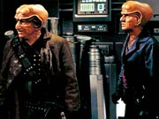
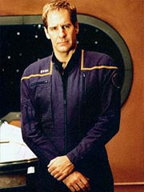
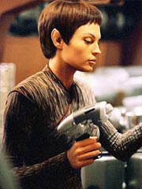
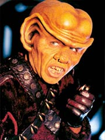
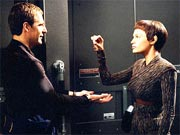
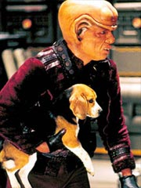
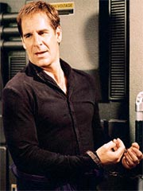

Episdio
anterior | Prximo
episdio
Sinopse:
A Enterprise abordada por uma
pequena nave Ferengi. Todos os tripulantes esto inconscientes,
graas a uma armadilha montada pelos aliengenas. Na ltima
misso de explorao, um grupo da Enterprise havia trazido um
estranho artefato a bordo. Quando ele foi ativado, na engenharia,
disparou um gs pelos sistemas da nave, deixando toda a tripulao
prostrada. O nico que escapa do embuste Tucker, que por sorte
est passando por processo de esterilizao na cmara de
descontaminao.

Os Ferengis
passam a recolher tudo que parece ser de algum valor, mas esto
mesmo procura do cofre da nave. Quando a busca no tem
sucesso, eles resolvem aprisionar e interrogar o capito Archer.
Ao ser questionado sobre o cofre, o capito diz que a Enterprise
no possui um. Mesmo apanhando, Archer mantm sua verso.
Somente quando os Ferengis ameaam deixar a nave levando as
mulheres para vender como escravas que Archer resolve dizer que h,
sim, um cofre. Ele promete mostrar aos aliengenas onde ele fica,
caso eles concordem em dividir as barras de ouro em partes iguais,
metade para Archer, metade para eles.
Ulis, o lder do grupo, recusa a oferta, mas decide ficar a bordo
para procurar mais o cofre. Ele ordena ao mais jovem dos quatro,
Krem, que comece a levar o fruto do saque para a nave deles.
Quando o rapaz, que sobrinho de Ulis, protesta, o capito
Ferengi sugere que ele obrigue Archer a fazer o trabalho, o que
ele acaba achando uma boa idia.

Os dois
vo transportando coisas para a nave Ferengi, e o capito da
Enterprise comea a tentar se aproximar de Krem, para convenc-lo
de que ele merece mais do que servir seus outros trs
"colegas". Enquanto isso, Tucker desistiu de esperar a
autorizao do dr. Phlox para sair da cmara de descontaminao
e j est perambulando pela nave. Ele v seus colegas cados e
tenta descobrir o que aconteceu. No demora a descobrir que a
nave foi invadida pelos aliengenas.
O engenheiro se esconde, para evitar a captura. No encontra
nenhuma arma nos armrios da nave, todas roubadas pelos Ferengis.
Mas segue monitorando o grupo pelos sistemas de cmeras. Ele
descobre onde est Archer, e vai ao encontro dele. O capito, ao
ver Tucker por perto, pede que Krem busque gua para ele no
refeitrio. O Ferengi o algema em uma barra no corredor e atende
ao pedido. Quando ele se vai, Archer e Tucker tm a chance de
conversar. O capito diz que tem uma idia, mas afirma que
Tucker precisar de mais gente para execut-la. Ele pede que o
engenheiro v at a rea de carga e use a hipospray deixada
pelos Ferengis para despertar outros tripulantes. Enquanto Krem
volta, Tucker parte.
Chegando na rea de carga, ele desperta T'Pol. Tenta tambm
acordar Hoshi, mas a hipospray j est vazia. Com a ajuda da
Vulcana, ele vai comear a colocar o plano de Archer em prtica.
Enquanto os dois esto na rea de carga, Archer e Krem entram em
cena. T'Pol finge estar inconsciente e Tucker se esconde. O
Ferengi pergunta sobre a Vulcana, claramente atrado, mas Archer
diz que ela no interessante. Os dois deixam o local, e Tucker
prepara-se para dar mais um passo no plano. Ele vai at uma regio
em um deck inferior da nave e coloca uma trava, para simular um
cofre. Ao mesmo tempo, T'Pol est atuando silenciosamente para
colocar os Ferengis uns contra os outros, pegando bens de um e
colocando nas coisas do outro.
Enquanto isso, Archer prope a Krem que esquea seus amigos e se
alie a ele. Os dois poderiam dividir o ouro e o subordinado
Ferengi poderia chegar ao sonho de ter sua prpria nave. Krem se
recusa, e o capito v que precisar de outro meio para retomar
a Enterprise.

Tucker, andando
pelos corredores, acaba sendo capturado por Ulis, e os Ferengis o
levam para a rea de carga, onde Archer est preso. O capito
demonstra surpresa com o fato de seu engenheiro estar acordado, e
diz que no sabia do fato. Os Ferengis finalmente decidem partir
com o que j pegaram e com as mulheres, antes que outros tambm
despertem. Tucker, entretanto, fica furioso e diz que no deixar
que levem sua esposa, Hoshi. Ele prope aos Ferengis mostrar o
cofre em troca de sua mulher, o que os aliengenas logo
concordam. Archer, por sua vez, ordena que Tucker no faa isso.
Os dois brigam e chegam a sair no brao, mas Archer acaba detido
pelos Ferengis e Tucker os leva para onde seria o cofre.
O nico que no acompanha o engenheiro Krem, mais uma vez
ordenado por Ulis. Mas, na nave Ferengi, quando T'Pol finalmente
mostra a ele que j no est mais inconsciente, o Ferengi fica
transtornado. Ela diz que uma vtima dos humanos e que est l
contra sua vontade, seduzindo-o. Ele pede que ela acaricie seus
lobos, o que serve como pretexto para que ela o renda, com um
toque neural Vulcano. Recuperando uma arma, ela segue para o deck
inferior da nave.
Tucker leva uma eternidade para achar o "cofre". Quando
os trs Ferengis finalmente o encontram, descobrem apenas uma
sala vazia, e T'Pol, j os esperando, nocauteia-os com tiros de
pistola de fase. Rendidos, os quatro Ferengis so obrigados a
devolver tudo que roubaram e partir. Archer os instrui a ficar bem
longe de qualquer nave humana ou Vulcana, e eles concordam. A
Enterprise, entretanto, nunca fica sabendo a que raa pertenciam
os aliengenas invasores...
Comentrios:
Antes da exibio, a abordagem dos fs para com "Acquisition"
certamente era "tora pelo melhor, espere pelo pior".
Afinal de contas, tudo que Enterprise no precisava era da
presena Ferengi, que j no era to apreciada nem onde ela
cabia, no sculo 24. Mas a verdade que, contrariando a lei das
probabilidades, este episdio acaba se saindo como um bom esforo
de comdia para a srie, melhor que a tentativa anterior, com a
gravidez de Tucker em "Unexpected".

O
fantasma da continuidade, a maior preocupao dos fs, no foi
definitivamente afastado, mas, dadas as condies do jogo, foi
graciosamente colocado de lado. Archer nunca fica sabendo a que
espcie pertencem os invasores de sua nave, deixando para Picard,
dois sculos depois, a descoberta de quem so os Ferengis. Essa
estratgia, no mencionar a palavra "Ferengi", pode at
funcionar para efeito de suspenso da descrena, mas bvio
que no se sustenta em um contexto mais amplo.
Afinal, o grande problema no que os Ferengis sejam ou no
reconhecidos aqui, mas sim que eles estejam longe da Terra o
suficiente para somente serem encontrados no sculo 24. Olhando
por essa perspectiva, ter uma apario Ferengi em Enterprise
vai contra o bom senso, embora, em termos tcnicos, esteja 100%
de acordo com a cronologia. O que nos leva segunda grande questo:
por que diabos os produtores quiseram trazer os Ferengis para a srie,
contrariando todas as recomendaes?
Aparentemente, o episdio nos leva a crer que se trata de uma
piada para a audincia. Lidar com um problema de continuidade de
forma bem-humorada, lembrando que tudo possvel, se a boa
vontade for suficiente. Isso j foi feito antes, em Deep Space
Nine, quando Worf faz um precioso comentrio sobre a aparncia
dos Klingons durante a Srie Clssica (em "Trials
and Tribble-ations"): "No comentamos isso com
forasteiros". Em outras palavras --esquea a coisa toda.
Da mesma forma, a apario Ferengi aqui faz questo de jogar
com o desespero do f. E deixar claro que os produtores esto de
olho e atentos s questes de continuidade. Depois do susto de
ver que os orelhudos baixinhos esto na srie errada, acabamos
obtendo algumas frases interessantes, escritas sob medida para os
fs. O maior exemplo disso quando Archer est despachando os
Ferengis subjugados e diz, enfaticamente, algo como "Se vocs
aparecerem perto de naves da Terra ou de Vulcano, esto
encrencados", ao que os Ferengis respondem, medrosamente,
"No se preocupe, voc nunca vai nos ver de novo".

impossvel no
apreciar inside jokes como essa, porque elas demonstram uma das
muitas diferenas que Jornada nas Estrelas tem com relao
a outras sries de televiso: possvel partilhar as
piadinhas com o pblico. Os produtores, roteiristas e fs acabam
alinhados do mesmo lado, apreciando a complexidade do franchise e
a malandragem de quem o est fazendo. como a frase de Worf, em
Deep Space Nine: o subtexto fala muito mais do que as
palavras em si.
Uma vez que voc entra nesse clima e senta para acompanhar "Acquisition",
trata-se de um episdio bem divertido. Tudo bem, a tripulao
da Enterprise foi rendida com um truque muito barato --um
dispositivo misterioso trazido a bordo que, quando ativado, libera
um gs por toda a nave e derruba todo mundo--, mas tudo em nome
do show. At isso lembra os velhos Ferengis, que adoram geringonas
e dispositivos para criar seus embustes (vide a tortura ao capito
Picard em "The
Battle", um dos primeiros episdios Ferengis da histria
de Jornada).
Os elementos Ferengis do episdio foram escolhidos de maneira
bastante acertada, equilibrando a nostalgia dos primeiros
orelhudos da Nova Gerao e o carter dos aliengenas
que surgiria mais tarde, principalmente em Deep Space Nine.
um prazer rever o chicote Ferengi, visto pela primeira vez em "The
Last Outpost" e depois abandonado, mas ainda assim
respirar aliviado pelo fato de os aliengenas no andarem
pulando e se contorcendo como macacos, tal qual fizeram no tal
episdio. At em termos histricos a cultura Ferengi
enriquecida: sabemos agora que em 2151 s havia 173 Regras de
Aquisio. O nmero subiria para 285 no sculo 24.

Agora,
o que melhor funciona no episdio que o destaque no dado
aos Ferengis em si, mas interao deles com nosso trio
principal, Archer, Tucker e T'Pol. Alis, Archer se mostra muito
mais rpido e astuto ao manipular os Ferengi aqui do que para
lidar com os Klingons em episdios anteriores. O que no s
joga em favor do nosso capito, como tambm ajuda a mostrar a
diferena que a premissa da srie faz para a histria.
Para Picard e sua trupe, os Ferengis eram verdadeiramente aliengenas,
uma cultura que em muito se afastava do que os humanos agora
acreditavam como ideal de vida. Para a turma do sculo 24, era
muito mais difcil entender como lidar com os baixinhos. Em
compensao, Archer, muito mais prximo dos gananciosos humanos
dos sculos 20 e 21, se adapta em questo de minutos ao modo de
pensar Ferengi. uma presena sutil da premissa da srie, mas
ainda assim aprecivel.
Outra coisa que brilha a interao entre Archer e Tucker. De
forma similar que vimos em "The
Andorian Incident", parece que basta uma troca de
olhares para que um saiba o que o outro est pensando e o que
deve ser feito a seguir. o tipo de relacionamento que brilha em
uma srie, como aconteceu com os inesquecveis Kirk, Spock e
McCoy.
O nico momento de Archer em que o telespectador fica incomodado
(e com razo) quando os Ferengis se prestam a surrar nosso
capito. No sei de vocs, mas eu j estou cansado de ver
Archer apanhar, apanhar e apanhar, sem razo ou reao por
parte dele. Virou um clich da srie.
T'Pol ainda est um pouco afastada dos outros dois, no que diz
respeito a essa qumica, mas ainda assim parece que est
caminhando na direo certa. Ela me pareceu "engraadinha"
demais para uma Vulcana, aplicando oo-mox em Krem antes de apag-lo
com o toque Vulcano. Poderia ter dispensado o apelo sexual e teria
tido sucesso da mesma forma. S no vou reclamar da cena porque
ficou engraada. Mas que atentou contra a dignidade da
personagem, atentou.
Em compensao, o dilogo dela com Archer ao final do episdio,
quando o capito ordena que ela o liberte, parece ter encontrado
o equilbrio certo. T'Pol est irnico como Spock, mas no
chega a ser absurdamente emotiva, protegendo seu jeito Vulcano de
ser. E a troca de palavras e de olhares hilariante. Andr e
Maria Jacquemetton acertaram na mosca.

Outro atrativo do
episdio a presena dos convidados Ethan "Neelix"
Phillips, Jeffrey "Weyoun" Combs e Clint "Balok"
Howard. Desses, o que mais brilha sem dvida o Combs, que est
se mostrando cada vez mais uma das preciosidades de Enterprise.
Ele foge perfeitamente a seus personagens anteriores, que incluem
at mesmo um Ferengi (Brunt, de DS9). Os outros no
comprometem, mas a personalidade unidimensional de seus
personagens no ajuda muito.
Finalmente, o elemento comdia. Na maior parte do tempo, funciona
maravilhosamente. Os Ferengis tentando estabelecer contato com
Porthos so hilrios, assim como a briga falsa entre Archer e
Tucker e o verdadeiro tour que o engenheiro d aos ladres antes
de chegar ao "cofre". Genial.
No fim das contas, trata-se de um segmento competente de Enterprise.
Apesar de todos os senes, "Acquisition" sem dvida
rendeu mais do que se poderia esperar dele. Os primeiros 15
minutos, em que a audincia s pode entender os dilogos se
estiver diplomada na lngua Ferengi, no chegam a cansar, e
depois que o tradutor universal comea a funcionar a coisa
realmente engrena. No um episdio brilhante, mas que sempre
vai trazer lembranas agradveis ao f, servindo at como um
tributo neura da continuidade e da cumplicidade que pode
existir entre quem faz a srie e quem a v.
Citaes:
Tucker - "Just
because a guy's in his underwear, you assume the worst."
("S porque um cara est de cuecas, e voc pensa no
pior.")
T'Pol - "Not that interesting... no sense of humor...
always complaining."
("No to interessante... sem senso de humor... sempre
reclamando.")
Archer - "I'll make it up to you."
("Eu vou te compensar.")
T'Pol - "How?"
("Como?")
Archer - "Five bars of gold?"
("Cinco barras de ouro?")
Ferengi - "You'll never see us again."
("Vocs nunca vo nos ver de novo.")
Trivia:
 Embora o incio do episdio seja todo falado em Ferengi, foi
possvel conhecer o dilogo do prlogo graas a um trecho do
roteiro que acabou chegando internet. Confira a transcrio,
traduzida para o portugus:
Embora o incio do episdio seja todo falado em Ferengi, foi
possvel conhecer o dilogo do prlogo graas a um trecho do
roteiro que acabou chegando internet. Confira a transcrio,
traduzida para o portugus:
ULIS
(impaciente)
Kora noosa? Kora noosa?
[Alguma coisa? Alguma coisa?]
MUK
(virando do console)
Irr zoun nagool ahsp.
[No esto respondendo aos chamados.]
ULIS [Bom.]
(para Grish)
Cucht eeta ekrajhn-voy?
[O que suas leituras dizem?]
GRISH
(trabalhando, satisfeito)
Irr gnales. Nohm setron quetsiVoo!
[Eles esto vivos, mas inconscientes. Funcionou!]
ULIS
NanDi!
[Excelente!]
(para Grish)
Vaneeday.
[Leve-nos para dentro.]
Esse episdio cheio
de estrelas convidadas. Clint Howard j apareceu antes na Srie
Clssica ("The
Corbomite Maneuver"), como Balok, e em Deep Space
Nine ("Past Tense, Part II"), como Grady.
Jeffrey Combs bem conhecido do pblico como Weyoun (DS9),
Brunt (DS9) e Shran (Enterprise). Ethan Phillips
o mais conhecido dos trs, interpretando Neelix durante sete
temporadas em Voyager.
Cronologicamente, esse foi o primeiro encontro da humanidade com
os Ferengis. Tecnicamente, foi o segundo, pois em 1947, em Roswell,
Novo Mxico (EUA), uma nave Ferengi com Quark, Rom e Nog a bordo
teria se chocado na Terra ("Little Green Men", de
DS9). Entretanto, em nenhuma das duas ocasies os aliengenas
foram associados ao nome "Ferengi", de modo que a
primeira identificao positiva coube a Jean-Luc Picard e
Enterprise-D, no episdio "The
Last Outpost".
Segundo Krem, h nessa poca 173 Regras de Aquisio. O nmero
subiria para 285 no sculo 24. Aqui so mencionadas quatro:
Nmero 45 - Expanda ou morra (essa
conhecida pelo nmero 95 no sculo 24)
Nmero 06 - Nunca permita a famlia ficar no caminho do lucro
(essa j havia sido mencionada em "The
Nagus", de DS9)
Nmero 23 - Nada mais importante que sua sade... exceto seu
dinheiro
Nmero ? - Um homem apenas vale a soma de suas posses
Segundo Connor Trinneer, muito de seu trabalho neste episdio
foi correr de cuecas pela nave. "Literalmente, eu no digo
uma palavra hoje. Estou s correndo por l com minha roupa de
baixo."
O produtor-executivo Brannon Braga no definiu a coisa de
forma muito diferente. "Os Ferengis tomam a nave e Trip passa
o episdio todo com suas roupas de baixo, correndo pela nave como
Bruce Willis."
Ficha
tcnica:
Histria de Rick Berman
& Brannon Braga
Roteiro de Maria & Andre Jacquemetton
Direo de James Whitmore, Jr
Exibido em 27/03/2002
Produo: 019